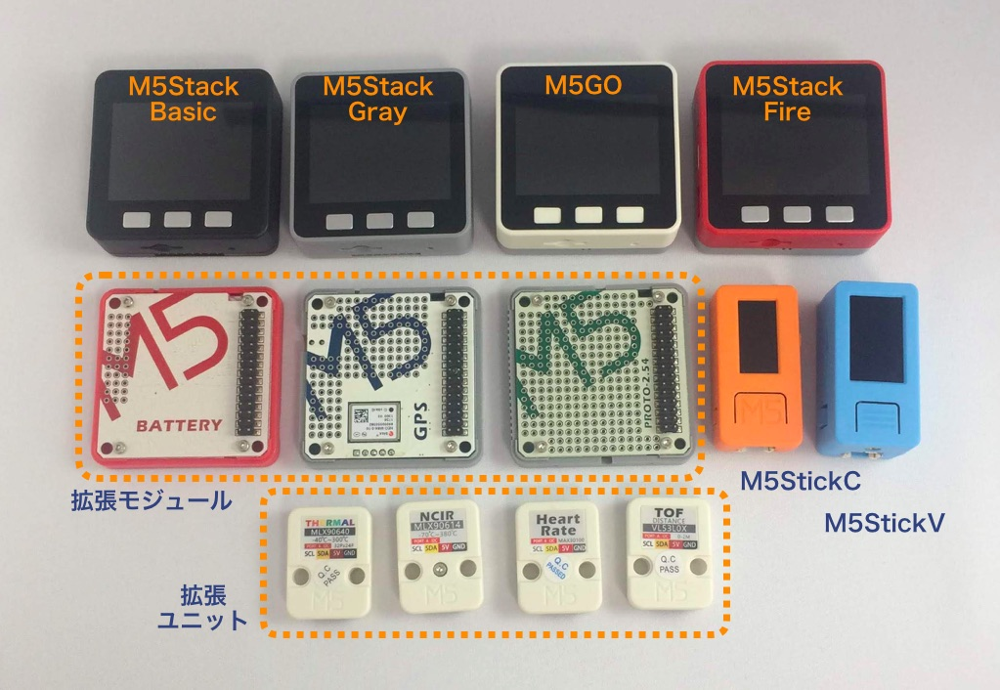

今回から新しいコーナー「M5Stackカフェ」が始まりました。このコーナーではM5StackやM5StickCにまつわる楽しい話題を紹介していきます。M5StackやM5StickCなどを使って、面白いもの、役に立つもの、役に立ちそうにないものなどを作ったり、面白いことをやっているユーザーさんを紹介したりする予定です。M5StackやM5StickCに興味のある方は是非チェックしてみてください。
第1回は、最初なのでM5StickCでプログラムを作る準備をして、LEDを点滅させてみます。
このコーナーで扱うM5StackやM5StickCは、M5Stack社が作っているマイコン端末です。M5Stack社はマイコン端末以外にも温度センサやGPS、カメラ、小型のロボットカーなど、M5StackやM5StickCと組み合わせて使ういろいろな拡張ユニットも作っています。

写真の左上がM5Stackの基本モデルのM5Stack Basic、その右がM5Stack Gray、M5GO、M5Stack Fireです。真ん中の列の左から3つはM5Stackに挟み込んで機能を拡張するモジュール、その右のオレンジ色の端末がM5StickC、右端の青い端末はM5StickVです。一番下の列はセンサなどの拡張ユニットです。
M5Stackは「エムファイブ・スタック」と読む人と、「エムゴ・スタック」と読む人がいるようで、どちらが正解ということではなさそうです。ちなみにM5Stack社CEOのJimmy Laiさんは「エムファイズ・スタック」と言っていましたが、社内では「エムウー（中国語の五）スタック」と言うこともあるそうなので、「エムゴ」でもいいのかもしれません。
この記事ではM5StackとM5StickCについて説明しますが、M5StackとM5StickCは共通なことも多いです。毎回「M5StackやM5StickC」と書くのは煩雑なので、特に断りがない場合は「M5Stack」と書いてあったら「M5StackやM5StickC」のことだと思ってください。
M5Stackはパソコンで自分の好きなプログラムを作って、M5Stackに転送して動かすことができます。プログラムでM5Stackやこれにつながっているセンサやモーターなどを制御することで、M5Stackでさまざまな作品を作ることができます。
M5Stackで動くプログラムを作る方法（プログラミング環境）には、次の3つがあります。
今回は、比較的簡単にM5Stackを制御するプログラムが作れるUIFlow(Blockly)を使います。
UIFlowを使うには次のような準備が必要です。ここからはM5StickCを対象にして説明します。
ファームウェアって何？APIキーって何？とわからない言葉がいくつもでてきましたが、順番に説明しますので、心配いりません。今のところは準備に6ステップかかることだけご理解ください。
次の4つのものを使います。
M5StickCにファームウェアを書き込む時はUSBケーブルを使いますが、その後はWi-Fi経由でプログラムを書き込みます。Wi-Fiは2.4GHzと5GHzの周波数を使いますが、M5StickCは2.4GHzでしか通信ができないので、お使いのWi−Fiルータの2.4GHzのSSIDとパスワードを控えておいてください。
ここからはWindows10での準備手順を説明しますが、Macでもほぼ同じ流れで準備できます。
初めてM5StickCをパソコンにUSBケーブルでつないで通信するときは、その前にパソコンにUSBドライバのインストールが必要です。ブラウザで次のページにアクセスし、「CP210X Driver」のWindows版をクリックしてダウンロードします。
https://m5stack.com/pages/download
ZIPファイルがダウンロードされるので、それを展開し、64ビット用のインストーラ（CP210xVCPInstaller_x64_v6.7.0.0）をクリックして、USBドライバをインストールします。
インストールが完了したら、M5StickCに同梱されているType-C USBケーブルでM5StickCとパソコンをつなぎます。Windowsの設定から「デバイス」を選択すると、次の図のようにM5StickCが表示されます。図では「M5Stack Intf」と表示されています。これでドライバのインストールは完了です。
次にパソコンにM5Burnerという、M5StickCにファームウェアを書き込むツールをインストールします。ファームウェアとはM5StickCを制御して、これから皆さんが作るプログラムのM5StickCへの司令をM5StickCに伝えてくれるプログラムです。
先程のダウンロードページの「M5Burner」のWindows版をクリックして、ダウンロードします。
ZIPファイルがダウンロードされるので、展開してその中にある M5Burner.exe を起動します。「.NET Frameworkが必要」というメッセージが出たら、それもインストールします。「PCを再起動する必要がある」というメッセージが出た場合は、メッセージに従ってPCを再起動して、PCが立ち上がったら M5Burner.exe を起動してください。
M5Burnerを起動すると、次のような画面が表示されます。
左のメニューからファームウェアのバージョンを選び、ファームウェア名の右のダウンロードボタンをクリックしてファームウェアをダウンロードします。今回は UIFlow-v1.4.1-beta を選択しました。
ダウンロードできるとファームウェア名が白い表示に変わり、右上の「Erase」ボタンの左に「Series: Stack-EN」が表示されます。「Series」の中から「StickC」を選択します。
M5StickCがUSBケーブルでパソコンにつながっていることを確認して、「Erase」ボタンをクリックし、「Finished」の表示がでたら、「Burn」ボタンをクリックします。最後に「Leaving… Staying in bootloader.」と表示されたらファームウェアの書き込みは完了です。
UIFlowのファームウェアを書き込んでしまって、Arduinoが使えなくなってしまったのではと不安になった方もおられると思いますが、心配いりません。Arduinoでスケッチを書いた場合は、そのままArduino IDEでスケッチをM5StickCに書き込めば、Arduinoスケッチを動かすことができます。さらにもう一度UIFlowを使う時は、M5Burnerでファームウェアを書き込むところからやり直してください。
ファームウェアを書き込んだら、Wi-Fiの設定をします。
まず、M5StickCの左側面にある電源スイッチを2秒押してオンにします。するとM5StickCの液晶画面に図のようにWi-Fiのアクセスポイント（AP）が表示されます。図では「M5-8da4」になっています。
パソコンでもスマホでもいいので、そのAPに接続します。パスワードはありません。接続したら、ブラウザから液晶画面に表示されているIPアドレス（図では「192.168.4.1」）にアクセスします。すると次のような画面が表示されるので、接続したいアクセスポイントのSSIDとパスワードを設定します。M5StickCは2.4GHzでしか通信できないので、2.4GHzのSSIDとパスワードを入力して「Configure」をクリックします。
するとM5StickCは自動的にWi-Fiアクセスポイントに接続します。これでM5StickC側の設定は終わりです。
M5StickCがWi-Fiアクセスポイントに接続すると、液晶画面にAPIキーが表示されます。
APIキーは、M5StackやM5StickCに個別につけられたIDです。UIFlowにこのAPIキーを入力することで、UIFlowがそのAPIキーを持つM5Stackとやり取りするようになります。M5Stackが2つ以上あっても、どのM5Stackとやり取りすればいいか区別がつくようになります。
ブラウザで次のアドレスにアクセスします。
すると次のように設定画面が現れます。
Api KeyにM5StickCに表示されたAPIキーを入力し、Deviceは「Stick-C」を選択します。ThemeはUIFlowのテーマカラーで、初期設定の青のままでも構いませんが、気分を盛り上げるためにM5StickCと同じオレンジを選択しました。OKボタンを押すと設定が終わり、UIFlowが立ち上がります。
画面左下に入力したAPIキーが表示され、[ Connected ]と表示されていれば、UIFlowはM5StickCと接続された状態です。
次に右上の「VER」というメニューをクリックして、「Beta」を選択してください。小さい画面が現れたら、真ん中の「Switch but don’t save」をクリックしてください。
ではさっそくプログラムを作ってみましょう。
UIFlowの画面中央のメニューの一番上にある「イベント」をクリックすると、イベント関係のブロック（機能部品）が現れます。この中から「くりかえし」というブロックをドラッグ＆ドロップして、右側のプログラムエリアに持っていきます。
プログラムエリアにある「setup」というブロックの出っ張った部分と「くりかえし」ブロックの凹んだ部分を近づけると、2つのブロックがつながり、「くりかえし」ブロックが「setup」ブロックと同じ色になります。
次に「ハードウェア」メニューの「LED」から「LED ON」をドラッグ＆ドロップして「くりかえし」ブロックの中にいれ、「タイマー」メニューの「1ミリ秒間停止」を「LED ON」の下につなげます。「1」の部分をクリックして「500」に書き換えてください。同様に、「LED OFF」と「1ミリ秒停止」をつなげて、次の図のようにします。
ここまでできたらUIFlowの右上の三角のアイコンをクリックしてみてください。M5StickCの左上の赤いLEDが点滅し始めました。
UIFlowはこんな感じで用意されたブロックを組み合わせてプログラムを作り、M5StickCに送って動かすことができます。
作ったプログラムを簡単に説明します。
このプログラムを動かすと、LEDを点け、0.5秒待ち、LEDを消し、0.5秒待ち、という動作が繰り返され、LEDが0.5秒ごとに点いたり消えたりします。
最後に、せっかく作った最初のプログラムなので、UIFlowの下のフロッピーのアイコンをクリックして保存しておきましょう。
第1回はプログラムを作る準備をしたので、話が長くなってしまいました。今回はここまでにします。
いやー、新コーナー「M5Stackカフェ」が始まりました。このコーナーでは、M5StackやM5StickCの魅力を、なるべくわかり易い言葉で紹介していこうと思います。とはいえ、第1回はM5Stackシリーズ全体の説明や、プログラムを作る方法の説明、その準備、とどうしても説明が多くなってしまいました。次回からは作例を中心に紹介していきますので、お付き合いください。